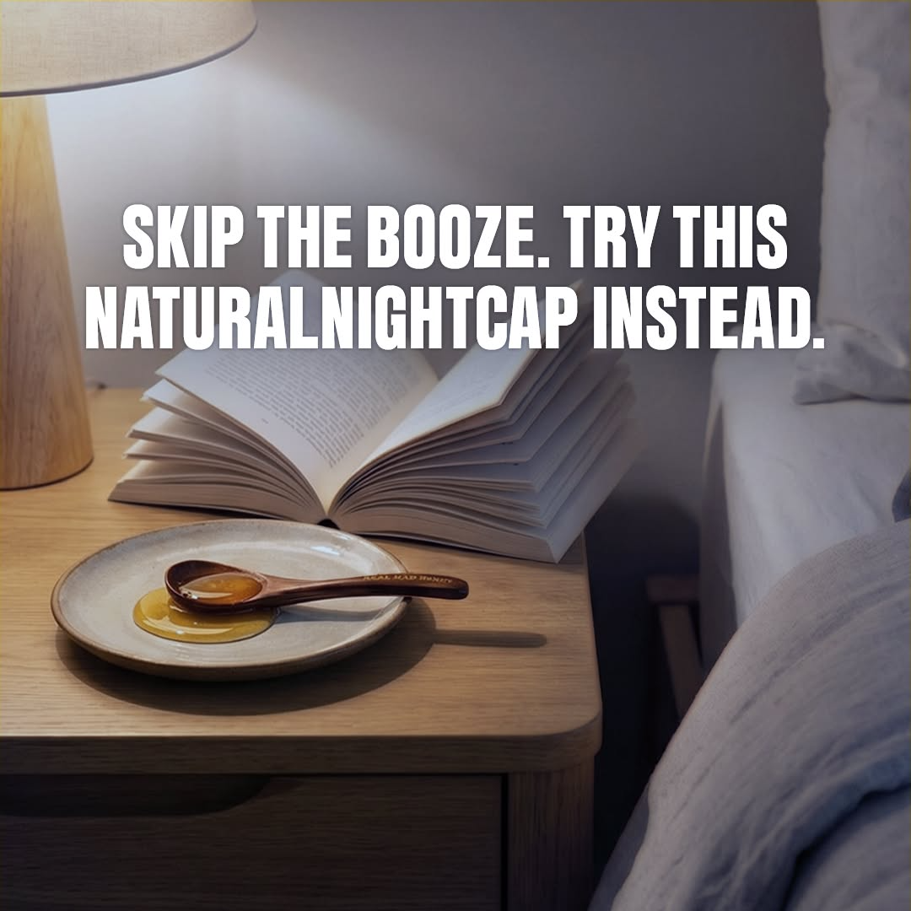
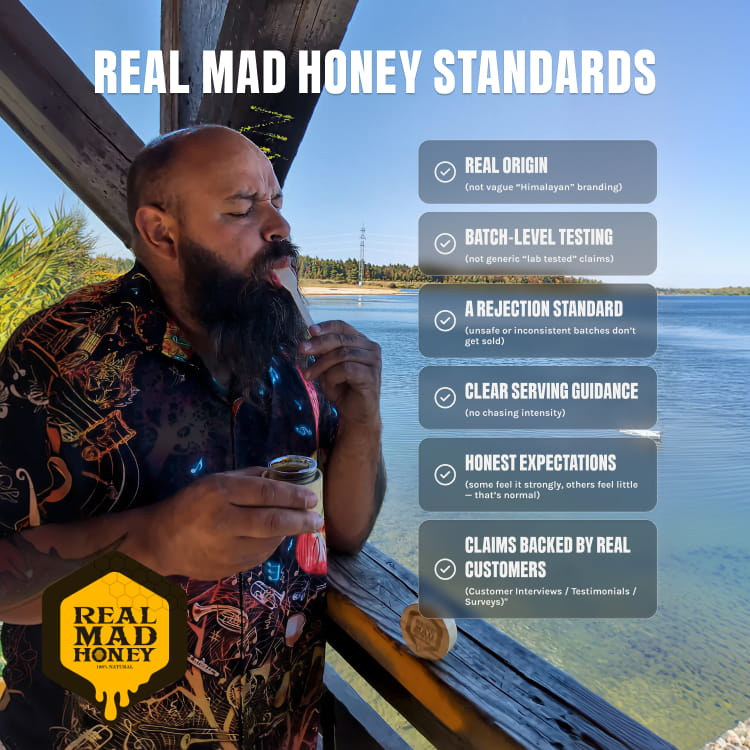
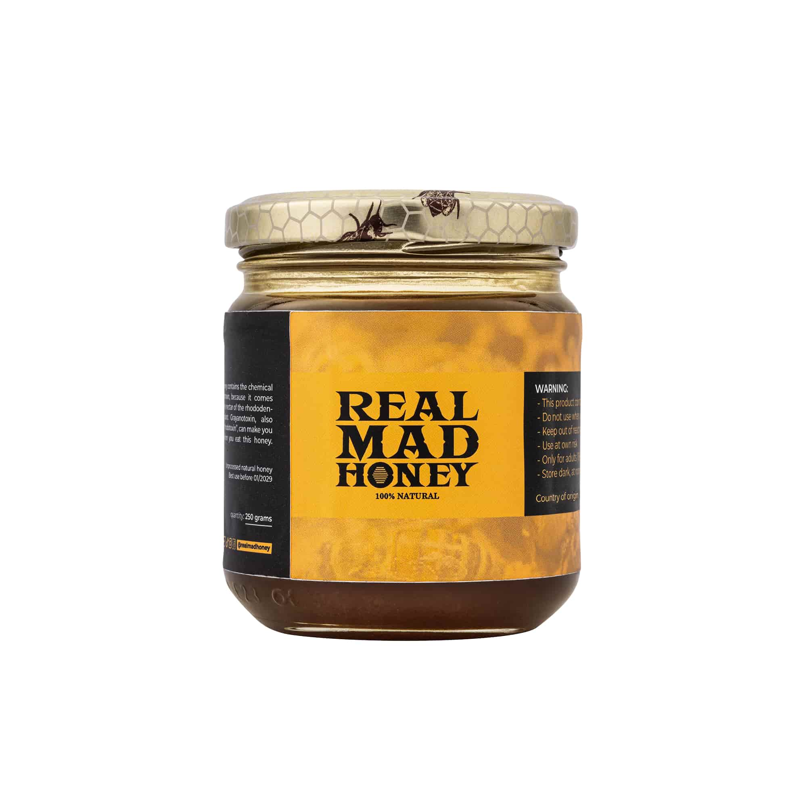
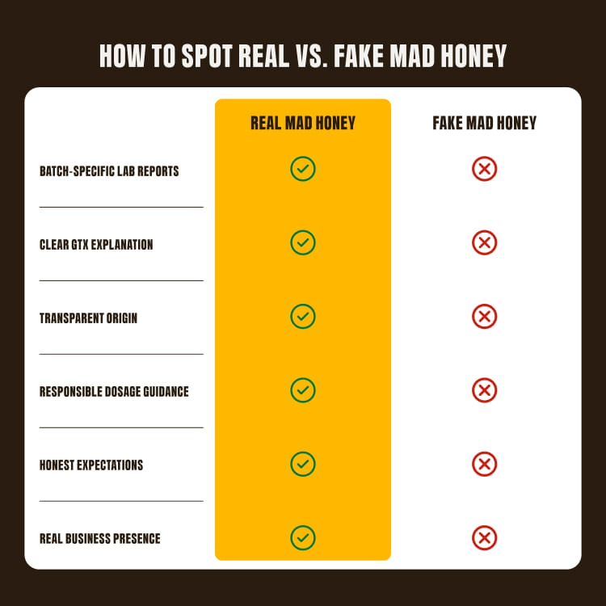
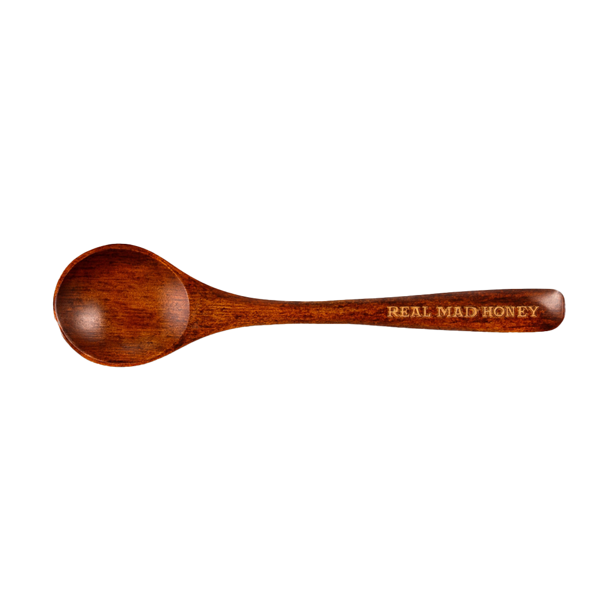

Wild-harvested
Cliff and mountain forage — seasonal, limited, impossible to mass-produce like supermarket honey.
Real Mad Honey
Wild mad honey from Nepal and Turkey — a small spoon for the moment the day ends. Calm. Present. Lab-tested every batch.
The 6:30 problem
You need the marker that says the workday is over — the pour, the pause, the quiet. What you don’t need is the fog, the second glass, or the morning after.

Him at 6:45: chest still tight from the commute, beer that becomes two, tomorrow already knocking.
Her at 6:30: replaying the day over a glass of red, waking puffy, carrying a quiet guilt about needing it.
Keep the ritual. Change what fills it.
The ritual
Spoon. Sit. Let the day unclench. Real Mad Honey is for the nights you’d normally reach for a drink — not a new daily habit to optimize.

What it is
Real Mad Honey is still honey — the difference is where the bees forage. In mountain regions of Nepal and Turkey, wild bees collect nectar from rhododendron flowers during short seasonal windows. Naturally occurring compounds called grayanotoxins make their way into the honey. At a small serving, many people feel a distinct evening downshift.
Cliff and mountain forage — seasonal, limited, impossible to mass-produce like supermarket honey.
Plant compounds from certain rhododendrons. Why a spoon can feel different from regular honey — and why serving size matters.
Strength varies by season and harvest. That is not a flaw to hide — it is why every batch is lab-tested.
The evening experience
Most people describe a warm wave of calm and a quieter head. Some feel a light mellow buzz. Some feel very little. Both are normal. This is a wild specialty food, not a pharmaceutical — your evening will not match a commercial.
Why Real Mad Honey
Knockoffs exist. Cheap listings do too. If you want the real jar, buy from realmadhoney.com — not the lowest Amazon lookalike.

Partners in mountain communities where this honey is traditionally harvested. Documentation and harvest footage on the site — not anonymous bulk honey relabeled.

Every batch is tested for purity. Reports are published. Anything outside thresholds is rejected. Potency varies — transparency is the point.
Prefer to dig in? Lab reports and product details live on realmadhoney.com.
How to approach it
A serving is a spoon — not a helping. First time: start small on an empty or light stomach.
Wait before considering more. Many people take it 30–45 minutes before they want to unwind. Do not stack doses.
Clear calm, subtle shift, or almost nothing — all normal. Learn your response before you ever take more.
For evenings you’d normally drink — not a prescription for every night.

Risk reversal
Alcohol has certainty of effect. Everything else asks you to take a chance. If Real Mad Honey is not for you, request a full refund within 60 days of delivery — that is how we collapse the hesitation.
Shop with the 60-day guaranteeQuestions
No. Real Mad Honey is a specialty food — wild honey. It is not sold as a treatment for anxiety, insomnia, or any medical condition.
No guarantee. Many people feel calm or a mellow buzz; some feel very little. Batch strength varies. Honest expectations beat dramatic ones — and the 60-day refund is there if it is not for you.
Start with a small spoon. Wait. Observe. Do not treat it like regular honey you drizzle freely. See the approach section above.
If you take blood pressure medication, talk with your doctor before using mad honey. Grayanotoxins can affect heart rate and blood pressure. This page is not medical advice — when in doubt, ask a clinician who knows your history.
No. Real Mad Honey is not for pregnant women. Do not use it if you are pregnant or think you might be.
No. This is not a cessation product. It is an evening ritual option for nights when you want the wind-down without alcohol — keep the ritual, remove that cost.
Fakes and mislabeled honey circulate. Real Mad Honey lab-tests every batch and sells direct at realmadhoney.com. If the price seems too good, be skeptical.
Real Mad Honey
Wild-harvested. Lab-tested. A spoon for the end of the day — with a 60-day refund if it is not yours.
Try the Evening RitualBlood pressure medication note · Not for pregnant women · 60-day refund